Description of the Module
The HelpCrunch ChatBot module is an ideal virtual manager solution that combines the diversity of many communication channels in one system and one tool:
Instagram;
Facebook;
Telegram bot;
Viber bot.
Integration with the Odoo system allows you to interact with the HelpCrunch service and monitor all messengers and pages configured in it through chatbots. The HelpCrunch service has a subscription fee, which is paid separately.
The HelpCrunch ChatBot module allows you to interact with the user, manage the processes of converting leads into loyal customers, increase sales and "retain" new users.
With the help of our Module HelpCrunch, you can:
Automatically create a Lead from an incoming message. A Lead includes: Source - a communication channel that consists of the name of the messenger and the name of the business page; Tags - tags of the chatbot through which the interaction with the client took place; History of correspondence with the user.
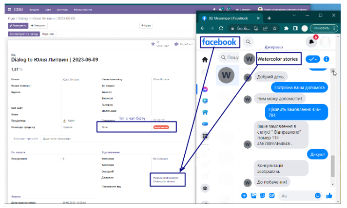
Continue communication with the customer from the CRM Lead card.
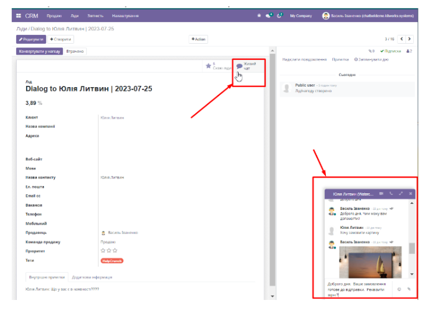
All messages from messengers are delivered to the standard Odoo Discuss interface:
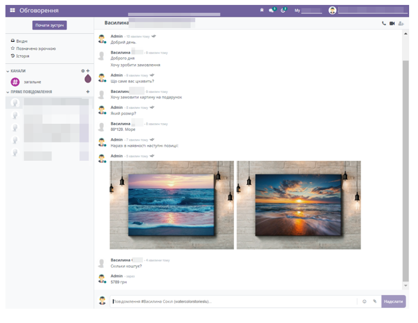
We are Ukrainian software developing company working with odoo versions 10 to 16.
We specialize on solutions for Ukrainian market, however often do much more.
Please see all of our Ukrainian modules here
Please see all of our modules here
Would be glad to talk about odoo customization and development for your company or your clients.
Feel free to contact us by:
>Email: info@kitworks.systems
Skype: myshyak_kiev
WhatsApp https://wa.me/380503342348
Telegram: https://t.me/myshyak
We do provide free bugfixes and updates for all our modules during 1 year after purchase.
The warranty is provided on clean odoo instance.
We would not help you (for free) in case our modules do not work on your server or conflict with any other modules.
Also we are ready to consider your feature requests to our modules, and if we would find them useful we can consider including them to new releases.
Also we do provide all types of odoo support services, like installing odoo instance on your server, supporting your odoo server, custom development.
Prepaid support and development packages are available upon request.
Module settings
To configure this module, select the Add-ons category, click the Refresh add-on lists button (located on the left in the top line) and enter "chatbot" in the search bar, and install the found modules.
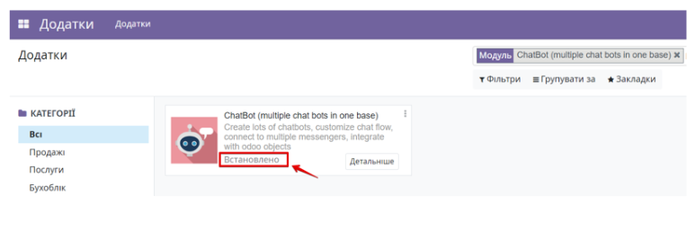
Next, go to the Chatbot module. If the chatbot does not appear in the list of modules, you need to check the user's access rights to this module. To do this, go to the user's settings and provide the appropriate access levels.
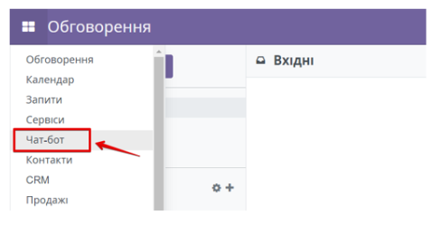
The chatbot menu consists of four sections and the Setup Config wizard:
1. Bots - contains a list of all bots that are used;
2. Dialogs - a list of all dialogs;
3. Senders - a list of all message senders;
4. Settings - additional settings of the module.
Go to the Chatbot menu and click on Settings. You will be taken to the initial settings wizard.
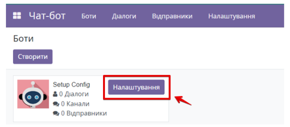
By default, communication and operator chatbots are immediately created, which makes it possible to build dynamic communication with the customer and then connect the operator to the dialog at any time during communication.
Step 1. Select a company or a list of companies for which you want to create chatbots.
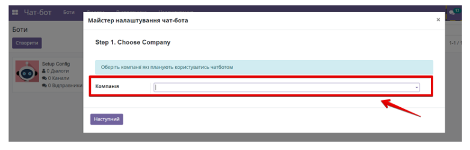
Step 2. Choose messengers for further communication. For the list of selected messengers, additional applications are installed to further customize them.
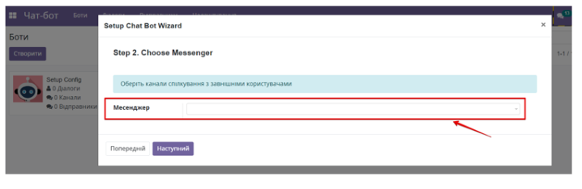
Step 3. Choose whether you want to add the operator's name to the responses. It is enabled by default.
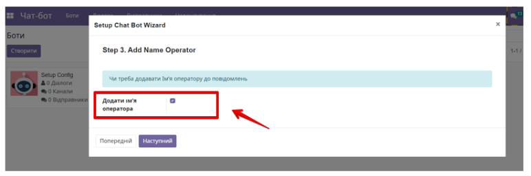
Step 4. Specify whether you want to create a Contact (Lead) for a new customer who has written a message to the Chatbot for the first time. It is recommended to leave the checkbox active so that a new Contact is created for each customer. If you do not create a Contact in the Odoo database for a new customer, the system will not be able to display dialogs in the Discussions module for all unknown contacts correctly.
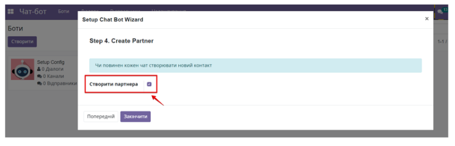
Click the Finish button. You will see a list of all chatbots created according to your settings.
If you need to add new communication channels from new messengers to the system, you can do this in several ways: install them through the Add-ons menu and install them through the Messengers menu in the chatbot settings.
After installing the necessary modules, go to the Chatbot menu. Go to the Settings tab and select Messengers.
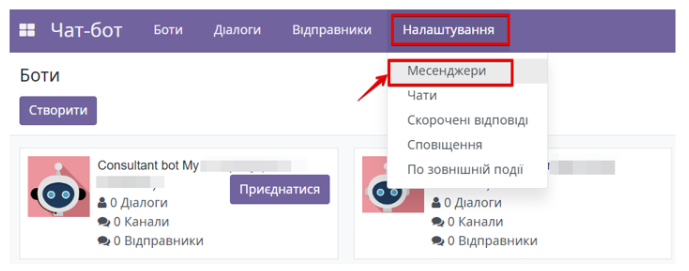
Find the HelpCrunch channel and activate it by clicking the Activate button. The status of the communication channel will change to "Enabled".
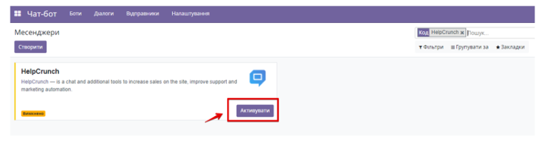
When you buy this Chatbot module, you receive an Extended Module Setup Manual with all the necessary configuration steps and a description of the functionality. You can also get the Advanced Guide upon request.